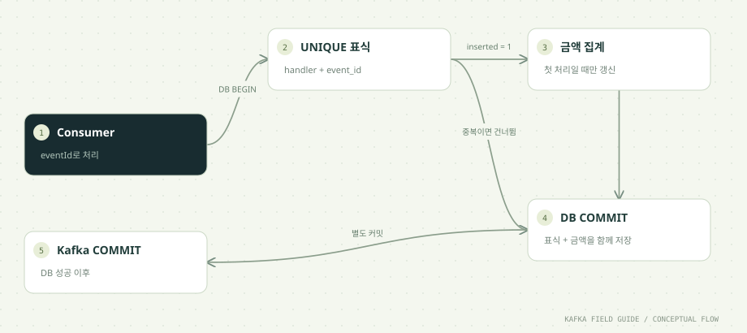

이 단원을 마치면
- Producer 멱등성과 Consumer 멱등성을 구분한다
- 중복 표식과 업무 갱신을 함께 커밋한다
- DB 성공 후 장애에도 합계가 중복 증가하지 않게 한다
- 업무에 맞는 멱등 키와 중복 표식 보관 기간을 정한다
01 / UNDERSTAND먼저, 원리를 이해합니다.
전달 중복과 업무 중복은 다른 문제입니다
Kafka에서 같은 레코드가 다시 오는 경로는 여러 가지입니다.
- Consumer 재처리: 처리 후 커밋 전에 장애가 나면 커밋된 위치부터 다시 읽습니다(05단원).
- 리밸런싱: 파티션이 다른 Consumer로 넘어갈 때 커밋되지 않은 구간은 새 담당자가 다시 처리합니다.
- 애플리케이션의 재발행: Producer 쪽 애플리케이션이 결과를 확신하지 못해 같은 이벤트를 다시
send()합니다. 10단원의 Outbox Relay가 대표적인 예입니다. - 수동 재처리: 운영자가
--reset-offsets로 위치를 되돌려 과거 구간을 다시 처리합니다.
이 중 어느 것도 '버그'가 아니라 정상적인 복구 과정의 일부입니다. 그래서 '한 번만 전달된다'고 가정하고 설계하는 대신, 같은 eventId를 다시 처리해도 업무 결과가 변하지 않게 만듭니다. 이런 성질을 멱등성(idempotency)이라고 합니다. 이 실습의 목표는 주문 금액을 합계에 두 번 더하지 않는 것입니다.
중복 표식만 먼저 저장하면 안 됩니다
'처리한 eventId를 기록해 두고, 이미 있으면 건너뛴다'는 아이디어는 단순하지만, 표식과 업무 변경을 따로 저장하면 다시 틈이 생깁니다.
- 표식 먼저, 업무 나중: 표식 저장 성공 → 합계 갱신 전에 장애. 재처리할 때 표식이 이미 있으므로 건너뛰고, 합계는 영영 올라가지 않습니다(누락).
- 업무 먼저, 표식 나중: 합계 갱신 성공 → 표식 저장 전에 장애. 재처리할 때 표식이 없으므로 다시 처리하고, 합계가 두 번 올라갑니다(중복).
두 순서 모두 05단원의 커밋 문제와 같은 구조입니다. 해결책은 두 변경을 같은 DB 트랜잭션에 넣는 것입니다. 트랜잭션 안에서는 표식 INSERT와 합계 UPDATE가 함께 커밋되거나 함께 롤백되므로, '표식은 있는데 합계는 안 올라간 상태'나 그 반대 상태가 DB에 남지 않습니다.
이 과정의 DedupStore.apply는 setAutoCommit(false)로 트랜잭션을 시작하고, 두 SQL을 실행한 뒤 db.commit()을 한 번 호출합니다. 중간에 예외가 나면 rollback()으로 둘 다 취소합니다.
유일 제약은 동시 처리에도 적용됩니다
'먼저 SELECT로 표식이 있는지 확인하고, 없으면 INSERT'하는 방식은 Consumer 두 개가 거의 동시에 같은 eventId를 처리할 때 둘 다 '없음'을 보고 둘 다 합계를 올릴 수 있습니다. 리밸런싱 직후 이전 담당자가 아직 처리를 끝내지 못한 상황에서 실제로 일어납니다.
그래서 판단을 애플리케이션이 아니라 DB의 유일 제약에 맡깁니다.
INSERT INTO processed_events(handler, event_id) VALUES ('order-totals', ?)
ON CONFLICT DO NOTHINGprocessed_events의 기본 키는 (handler, event_id)입니다. 처음 들어온 eventId는 INSERT에 성공해 영향받은 행 수가 1이고, 이미 있는 eventId는 충돌을 무시해 0을 돌려줍니다. 코드는 이 값이 1일 때만 합계를 갱신합니다. 두 트랜잭션이 같은 키를 동시에 넣으려 하면 PostgreSQL은 먼저 넣은 트랜잭션이 끝날 때까지 나중 트랜잭션을 기다리게 한 뒤 결과를 정하므로, 둘 중 하나만 1을 받습니다.
handler 컬럼은 같은 이벤트를 소비하는 서로 다른 업무를 구분합니다. 주문 합계 업무와 포인트 적립 업무가 같은 eventId를 각자 한 번씩 처리해야 한다면 handler를 다르게 두면 됩니다. 주의할 점은 이 표식이 Consumer Group이 아니라 handler 단위라는 것입니다. 이 과정에서는 그룹 이름을 바꿔도 handler가 order-totals로 같으므로, 이미 처리한 eventId는 새 그룹에서도 건너뜁니다.
DB와 Kafka의 커밋은 여전히 별개입니다
DB 트랜잭션으로 표식과 합계를 묶었지만, Kafka offset 커밋은 그 트랜잭션 밖에 있습니다. 순서는 'DB 커밋 → Kafka 커밋'이고, 그 사이의 틈은 그대로 남습니다.
DB COMMIT 성공 (표식 + 합계) → [여기서 장애] → Kafka offset 커밋 못 함
재시작 → 같은 레코드를 다시 읽음 → INSERT가 0건 → 합계 갱신 건너뜀 → Kafka 커밋전달은 중복되었지만 결과는 한 번만 반영되었습니다. 이 실습의 crash-after-db 모드가 정확히 이 틈에서 프로세스를 멈춥니다.
이 보호에는 범위가 있습니다. DB 트랜잭션에 들어간 변경만 보호됩니다. 같은 Consumer가 문자 발송 API를 호출한다면 그 호출은 DB 롤백으로 취소되지 않으므로, 문자 API 쪽에 주문 번호 같은 멱등 키를 넘기는 별도 장치가 필요합니다. 그리고 표식은 언젠가 지워야 하는 데이터입니다. 표식을 지운 뒤에 같은 이벤트가 다시 오면 막을 수 없으므로, 보관 기간은 재처리가 일어날 수 있는 기간보다 길어야 합니다.
멱등 키는 업무 사실 한 건마다 하나입니다
멱등 처리의 성패는 키를 어떻게 정하느냐에 달려 있습니다. 원칙은 같은 업무 사실에는 몇 번을 다시 보내도 같은 키, 다른 사실에는 다른 키입니다.
- 좋은 예: 주문 생성 시점에 eventId를 한 번 발급해 이벤트와 함께 저장하고, 재발행할 때도 그 값을 그대로 씁니다. 10단원의 Outbox는 eventId를 DB에 저장해 두므로 재발행해도 바뀌지 않습니다.
- 나쁜 예:
send()를 재시도할 때마다UUID.randomUUID()로 새 eventId를 만듭니다. Consumer 입장에서는 매번 새로운 사실로 보이므로 중복을 판별할 수 없습니다. - 자연 키: 업무 데이터 자체에 유일한 값이 있다면 그것을 키로 쓸 수 있습니다. '주문 order-7의 결제 완료'처럼 같은 주문에 한 번만 일어나는 사실이라면
orderId + eventType조합이 자연스러운 키가 됩니다.
이 과정의 runId가 바로 이 원리를 실험하는 장치입니다. 같은 runId로 producer를 두 번 실행하면 같은 eventId가 서로 다른 offset에 두 번 기록됩니다. Kafka 입장에서는 서로 다른 레코드 두 건이지만, 업무 입장에서는 같은 사실의 중복입니다.
시간순으로 따라가기: DB 커밋 직후 장애에서 합계 지키기
dedup crash-after-db 실행과 재시작 사이의 DB와 Kafka 상태 변화입니다. eventId와 금액은 예시입니다.
| 시점 | 일어나는 일 | DB 상태 (표식 / 합계) | Kafka committed |
|---|---|---|---|
| T1 | Consumer가 evt-001을 poll로 받습니다. | 없음 / 0원 | 이전 위치 |
| T2 | DB 트랜잭션 시작, 표식 INSERT가 1행을 돌려줍니다. | (커밋 전) | 이전 위치 |
| T3 | order_totals에 10,000원을 더합니다. | (커밋 전) | 이전 위치 |
| T4 | db.commit()으로 표식과 합계를 함께 저장하고 APPLIED를 출력합니다. | 있음 / 10,000원 | 이전 위치 |
| T5 | CRASH: DB committed, Kafka offset not committed 후 강제 종료합니다. | 있음 / 10,000원 | 이전 위치 |
| T6 | 재시작한 Consumer가 같은 evt-001을 다시 받습니다. | 있음 / 10,000원 | 이전 위치 |
| T7 | 표식 INSERT가 충돌로 0행, 합계 갱신을 건너뛰고 DUPLICATE_SKIPPED를 출력합니다. | 있음 / 10,000원 | 이전 위치 |
| T8 | Kafka offset을 커밋합니다. | 있음 / 10,000원 | evt-001 다음 위치 |
T4와 T8 사이의 틈은 없어지지 않습니다. 그 틈에서 생긴 재전달을 T7의 유일 제약이 흡수합니다.
Producer 멱등성과 업무(Consumer) 멱등성 비교
| 구분 | Producer 멱등성 (enable.idempotence=true) | 업무 멱등성 (이 단원) |
|---|---|---|
| 막는 중복 | Producer가 내부적으로 재시도한 배치가 브로커에 두 번 기록되는 것 | 같은 업무 이벤트가 Consumer에 여러 번 전달되어 결과가 여러 번 반영되는 것 |
| 판별 기준 | Producer ID와 파티션별 sequence 번호 (Kafka가 자동 관리) | 애플리케이션이 정한 멱등 키 (이 과정은 eventId) |
| 적용 범위 | 같은 Producer 세션 안의 재시도 | Consumer 재처리, 리밸런싱, 애플리케이션 재발행, 수동 재처리 |
| 못 막는 것 | 애플리케이션이 send()를 새로 두 번 호출한 경우 | DB 트랜잭션 밖의 외부 부작용(문자 발송 등) |
| 설정 위치 | Producer 설정, Kafka 4.x 기본값 true | Consumer 코드와 DB 스키마 |
두 장치는 서로 대신하지 못하고 함께 씁니다. 04단원 실습에서 같은 runId로 두 번 발행했을 때 같은 eventId가 두 offset에 기록된 것이 Producer 멱등성의 한계를 보여 줍니다.
자주 쓰는 멱등 처리 패턴
| 패턴 | 방법 | 어울리는 경우 | 주의할 점 |
|---|---|---|---|
| 중복 표식 + 트랜잭션 (이 실습) | 표식 INSERT가 성공할 때만 업무 변경, 둘을 한 트랜잭션으로 | 합계 증가처럼 두 번 하면 결과가 달라지는 변경 | 표식 테이블 보관·정리 정책이 필요합니다. |
| 자연 키 유일 제약 | 업무 테이블 자체에 유일 제약을 두고 INSERT ... ON CONFLICT DO NOTHING | 주문 생성, 결제 기록처럼 한 번만 생기는 행 | 키를 업무적으로 정확히 정의해야 합니다. |
| 절댓값 UPSERT | 증가(+10,000) 대신 최종 값(상태=PAID)을 덮어쓰기 | 상태 변경, 최신 값 저장 | 순서가 뒤바뀌면 오래된 값으로 덮일 수 있습니다. |
| 버전 조건부 갱신 | UPDATE ... WHERE version < ?처럼 더 새로운 버전일 때만 반영 | 순서가 섞여 들어올 수 있는 상태 동기화 | 이벤트에 단조 증가하는 버전이 있어야 합니다. |
한 걸음 더: 함께 알아둘 개념
기본 흐름을 이해했다면, 실무에서 곧바로 마주치는 관련 개념을 이어서 정리합니다.
Producer 멱등성은 어디까지 막아 주나요?
enable.idempotence=true(Kafka 4.x Producer 기본값)를 켜면 Producer는 브로커로부터 Producer ID를 받고, 파티션마다 보내는 배치에 sequence 번호를 붙입니다. 네트워크 문제로 ack를 받지 못해 같은 배치를 재전송하더라도, 브로커는 이미 기록한 sequence를 알아보고 중복으로 기록하지 않습니다.
이 장치가 막는 것은 Producer 라이브러리 내부의 재시도뿐입니다. 애플리케이션 코드가 결과를 확신하지 못해 send()를 새로 호출하면, 그것은 새 sequence를 가진 새 레코드입니다. Producer 프로세스가 재시작되어 새 Producer ID를 받은 뒤 같은 이벤트를 다시 보내는 경우도 마찬가지입니다. 그래서 Producer 멱등성을 켰더라도 Consumer 쪽에서 eventId 기반의 업무 멱등성을 따로 구현해야 합니다.
중복 표식은 언제까지 보관하나요?
processed_events에는 처리한 이벤트마다 한 행씩 쌓이므로 그대로 두면 계속 커집니다. 그렇다고 너무 일찍 지우면 그 뒤에 같은 이벤트가 다시 왔을 때 막을 수 없습니다. 보관 기간은 같은 이벤트가 다시 올 수 있는 가장 긴 기간보다 길게 잡습니다.
- Kafka 보관 기간: 토픽 보관 기간(이 과정은 7일) 안의 레코드는
--reset-offsets로 언제든 다시 처리될 수 있습니다. - 재발행 가능 기간: Outbox Relay처럼 생산 쪽이 과거 이벤트를 다시 보낼 수 있는 기간도 포함합니다.
- 운영 절차: 장애 분석 후 며칠 전 구간을 다시 처리하는 운영 관행이 있다면 그 기간까지 고려합니다.
정리는 processed_at 컬럼(이 과정의 스키마에 이미 있습니다)을 기준으로 오래된 행을 주기적으로 지우는 배치 작업으로 합니다. 행이 매우 많다면 날짜별 파티션 테이블로 나눠 오래된 파티션을 통째로 버리는 방법이 정리 비용을 줄입니다.
offset을 업무 DB에 함께 저장하는 방법
DB 커밋과 Kafka 커밋 사이의 틈을 아예 없애고 싶다면, offset 자체를 업무 DB에 같은 트랜잭션으로 저장하는 방법이 있습니다. 업무 변경과 '이 파티션은 offset 42까지 처리했다'는 행을 함께 커밋하는 것입니다.
이 방법을 쓰면 Kafka의 committed offset 대신 DB에 저장한 위치를 기준으로 읽어야 하므로, 파티션을 배정받을 때(onPartitionsAssigned) DB에서 위치를 읽어 consumer.seek()로 이동합니다. 처리 결과와 위치가 원자적으로 저장되므로 결과는 한 번만 반영됩니다.
대신 비용이 있습니다. 위치가 Kafka에 없으면 kafka-consumer-groups --describe나 모니터링 도구가 Lag을 보여 주지 못하므로, 관측용으로 Kafka에도 커밋을 따로 해 두는 경우가 많습니다. 리밸런싱 처리 코드가 복잡해지고, 업무 DB가 Kafka 운영 정보까지 떠안게 됩니다. 그래서 대부분의 서비스는 이 단원의 '표식 + at-least-once' 방식을 기본으로 쓰고, 처리량이 아주 크거나 표식 테이블을 두기 어려운 경우에 이 방법을 검토합니다.
02 / FOLLOW THE EVENT데이터의 이동을 따라갑니다.


원리를 이해하기 위한 단계 모델입니다. 네트워크 시간이나 장애 판정을 재현하지 않습니다.
03 / READ THE CODE현업 패턴을 코드로 읽습니다.
아래 코드는 함께 제공된 실행 소스에서 발췌했습니다. 전체 클래스와 설정은 소스 파일에서 확인할 수 있습니다.
int inserted;
try (var insert = db.prepareStatement("INSERT INTO processed_events(handler,event_id) VALUES ('order-totals',?) ON CONFLICT DO NOTHING")) {
insert.setString(1, event.eventId());
inserted = insert.executeUpdate();
}
if (inserted == 1) {
try (var update = db.prepareStatement("""
INSERT INTO order_totals(order_id,event_count,total_amount) VALUES (?,1,?)
ON CONFLICT (order_id) DO UPDATE SET
event_count=order_totals.event_count+1,
total_amount=order_totals.total_amount+EXCLUDED.total_amount
""")) {
update.setString(1, event.orderId());
update.setLong(2, event.amount());
update.executeUpdate();
}
}
// Dedup marker and business change are committed together.
db.commit();소스: 중급/src/main/java/study/kafka/DedupStore.java · 11행부터
executeUpdate()가 돌려주는 영향받은 행 수로 첫 처리인지 판단합니다. 중복 이벤트의inserted값은 0이며, 이 경우 합계를 갱신하지 않습니다.- 합계 갱신은
INSERT ... ON CONFLICT (order_id) DO UPDATE(UPSERT)입니다. 주문의 첫 이벤트면 행을 만들고, 이미 있으면event_count와total_amount를 더합니다. - 두 SQL은 같은 Connection에서
autoCommit=false로 실행되고db.commit()한 번으로 함께 저장됩니다. 예외가 나면rollback()으로 둘 다 취소합니다. - 실제 서비스에서는 커넥션 풀, DB timeout, 락 경합, 표식 보관 정책도 필요합니다. 예제는 트랜잭션 경계를 드러내기 위해 연결을 단순화했습니다.
04 / MAKE IT REAL이제, 직접 확인합니다.
PowerShell에서 저장소 루트로 이동한 뒤 실행하세요. 01단원의 up → build → init이 선행되어야 합니다. 종료된 환경은 up으로 다시 시작합니다. 이후 단원의 max=0은 입력이 끊긴 뒤 25초까지 읽습니다. 대응 실습 안내 파일 ↗
01. DB 성공 후 종료
.\실습\study.ps1 run dedup dedup-crash-demo 1 crash-after-dbAPPLIED 또는 기존 처리라면 DUPLICATE_SKIPPED 뒤 exit 17로 종료합니다.
ASSIGNED [orders-0, orders-1, orders-2]
APPLIED event=day01-2 order=order-2
CRASH: DB committed, Kafka offset not committed
Docker command failed (exit 17). See the output above.APPLIED는 표식 INSERT가 1행을 돌려줘 합계까지 갱신하고 DB 커밋을 마쳤다는 뜻입니다. 다음 줄의 CRASH는 Kafka offset을 커밋하기 전에 프로세스를 멈췄다는 표시이며, exit 17은 의도된 결과입니다.
첫 줄이 APPLIED가 아니라 DUPLICATE_SKIPPED로 나올 수도 있습니다. 이전 단원이나 다른 그룹에서 같은 eventId를 이미 order-totals handler로 처리했다면 표식이 남아 있기 때문입니다. 중복 표식은 그룹이 아니라 handler 단위라는 점을 보여 주는 정상 결과입니다. 출력된 eventId를 메모해 두세요.
02. 동일 그룹 재시작
.\실습\study.ps1 run dedup dedup-crash-demo 1 normal같은 eventId가 DUPLICATE_SKIPPED로 출력됩니다.
ASSIGNED [orders-0, orders-1, orders-2]
DUPLICATE_SKIPPED event=day01-2 order=order-2
REVOKED [orders-0, orders-1, orders-2]
HANDLED 1Kafka offset이 커밋되지 않았으므로 같은 레코드가 다시 전달되었습니다(전달 중복). 그러나 표식 INSERT가 충돌로 0행을 돌려줘 합계를 건드리지 않았습니다(결과는 한 번). 이번에는 정상 모드라 처리 뒤 Kafka offset까지 커밋했습니다.
05단원의 commit 실험에서는 같은 상황에서 PROCESSED가 두 번 찍혔습니다. 같은 재전달이 이번에는 DUPLICATE_SKIPPED로 흡수되었다는 차이를 비교해 보세요.
03. 합계 관찰
.\실습\study.ps1 sqlprocessed event에 해당하는 합계가 한 번만 증가했는지 장애 전후 비교합니다.
order_id | event_count | total_amount
----------+-------------+--------------
order-2 | 1 | 3000
(1 row)
event_id | published_at
----------+--------------
(0 rows)sql 명령은 order_totals와 outbox 두 테이블을 조회합니다. 이 단원에서 볼 것은 첫 번째 표입니다. event_count는 그 주문에 반영된 이벤트 수, total_amount는 반영된 금액의 합입니다.
위 예시는 앞의 두 명령에서 day01-2(order-2, 3,000원)를 처리한 직후입니다. crash 실행에서 한 번 APPLIED, 재시작에서 DUPLICATE_SKIPPED였으므로 레코드는 두 번 전달되었지만 event_count는 1, 합계는 3,000원입니다. 여러분이 메모한 eventId의 주문이 한 번만 늘었는지 같은 방법으로 확인하세요. 다른 실험으로 이미 반영된 데이터가 있다면 숫자는 달라집니다. 두 번째 표(outbox)는 10단원 전에는 비어 있는 것이 정상입니다.
04. 전체 처리
.\실습\study.ps1 run dedup dedup-all 0 normal기존 레코드를 모두 읽습니다. 이전에 처리한 eventId는 건너뜁니다.
ASSIGNED [orders-0, orders-1, orders-2]
DUPLICATE_SKIPPED event=day01-2 order=order-2
APPLIED event=day02-2 order=order-2
APPLIED event=day02-5 order=order-2
...
DUPLICATE_SKIPPED event=day04-2 order=order-2
...
REVOKED [orders-0, orders-1, orders-2]
HANDLED 93새 그룹 dedup-all은 커밋 기록이 없으므로 orders의 가장 오래된 레코드부터 모두 읽습니다. 이미 처리한 eventId는 DUPLICATE_SKIPPED, 처음 보는 eventId는 APPLIED로 나옵니다.
HANDLED는 이번 실행이 읽은 레코드 수입니다. 01~05단원 명령만 실행했다면 orders에는 93건이 있으므로 93이 나옵니다. 그중 DUPLICATE_SKIPPED는 4건입니다. 직전 실험에서 이미 반영한 day01-2 1건, 그리고 04단원에서 같은 runId로 두 번 보낸 day04-0~day04-2의 두 번째 기록 3건입니다. 나머지 89건이 APPLIED이므로, 다시 sql을 실행하면 세 주문의 event_count를 더한 값이 90(1 + 89)이 됩니다. HANDLED와 APPLIED의 차이가 이번 실행에서 흡수한 중복의 수입니다.
한 걸음 더 실험하기
- 같은 runId로 producer를 두 번 실행하고 서로 다른 offset의 동일 eventId가 dedup에서 한 번은 APPLIED, 한 번은 DUPLICATE_SKIPPED로 처리되는지 확인하세요.
- 두 dedup Consumer를 같은 그룹으로 동시에 실행해도 DB 유일 제약 덕분에 합계가 한 번씩만 늘어나는지 확인하세요.
- DedupStore에서 표식 INSERT와 합계 UPSERT 사이에 예외를 던지도록 바꿔 빌드한 뒤, rollback으로 둘 다 저장되지 않는지 관찰해 보세요. 실험 후에는 코드를 원래대로 되돌립니다.
05 / APPLY IT로그 수집 파이프라인에 적용하면
같은 개념이 대용량 장비 로그 수집(수집 에이전트 → 수집 서버 → Kafka → 로그 저장소)에서는 어떻게 쓰이는지 정리합니다. 특정 회사나 장비가 아닌 일반적인 구성을 기준으로 합니다.
로그 중복은 로그 ID로 저장소에서 정리합니다
로그 수집 파이프라인도 at-least-once로 동작하므로 같은 로그 줄이 저장소에 두 번 들어가는 일이 생깁니다. 수집 에이전트의 재전송, 수집 서버의 재시도, 저장 Consumer의 재처리가 모두 원인이 됩니다. 이 단원의 원리를 로그에 옮기면 다음과 같습니다.
- 로그 ID 정하기: 주문의 eventId처럼 로그 한 줄에도 안정된 ID가 필요합니다. 수집 에이전트가
장비 ID + 부팅 또는 세션 번호 + 순번처럼 다시 보내도 바뀌지 않는 값을 붙이는 방법이 가장 확실합니다. 그럴 수 없다면장비 ID + 장비 시각 + 파일 내 위치같은 조합의 해시를 쓰되, 내용만으로 해시를 만들면 같은 메시지가 같은 시각에 정상적으로 두 번 찍힌 경우까지 합쳐 버리므로 피합니다. - 줄마다 표식 테이블을 두기는 어렵습니다: 하루 수억 건의 로그마다 RDB에 표식 행을 넣으면 그 자체가 병목입니다. 그래서 로그는 보통 저장소의 중복 정리 기능을 씁니다.
- 저장소 쪽 정리: 예를 들어 ClickHouse의 ReplacingMergeTree는 정렬 키가 같은 행을 백그라운드 병합 때 하나로 정리합니다. 병합은 나중에 일어나므로, 정리 전까지는 조회 결과에 중복이 보일 수 있다는 점을 알고 써야 합니다. ClickHouse의 Kafka 테이블 엔진도 공식 문서상 at-least-once이므로 같은 원리가 필요합니다.
- 집계는 더 조심합니다: 로그 원문은 중복이 조금 남아도 큰 문제가 아니지만, 장비별 오류 건수 같은 집계 결과에 중복이 섞이면 알람 기준이 틀어집니다. 집계는 로그 ID 기준으로 중복을 제거한 뒤 계산합니다.
로그 ID가 없으면 어떤 방법으로도 중복을 정확히 걸러 낼 수 없습니다. 파이프라인을 설계할 때 공통 로그 스키마에 ID 필드를 먼저 넣어 두는 것이 가장 값싼 대책입니다.
06 / CHECK YOUR UNDERSTANDING설명할 수 있으면, 내 지식입니다.
자주 묻는 질문
enable.idempotence=true를 켰는데 왜 Consumer에서 또 중복을 막아야 하나요?
Producer 멱등성은 같은 Producer 세션 안에서 라이브러리가 재시도한 배치의 중복만 막습니다. Consumer가 커밋 전에 죽어서 같은 레코드를 다시 읽는 경우, 애플리케이션이 같은 이벤트를 새로 send()한 경우, 운영자가 offset을 되돌린 경우는 모두 Producer 멱등성의 범위 밖입니다. 그래서 두 장치를 함께 씁니다.
표식을 SELECT로 먼저 확인하면 더 간단하지 않나요?
단일 Consumer에서는 동작하는 것처럼 보이지만, 두 Consumer가 같은 eventId를 거의 동시에 처리하면 둘 다 '없음'을 보고 둘 다 합계를 올릴 수 있습니다. 리밸런싱 직후에 실제로 일어나는 상황입니다. DB 유일 제약과 ON CONFLICT DO NOTHING을 쓰면 판정이 DB 안에서 원자적으로 이루어지므로 이런 경쟁이 생기지 않습니다.
이벤트가 순서가 뒤바뀌어 들어오면 어떻게 하나요?
합계처럼 더하기만 하는 업무는 순서와 상관없이 결과가 같습니다. 반면 '주문 상태'처럼 마지막 값이 의미 있는 업무는 순서가 뒤바뀌면 오래된 상태로 덮일 수 있습니다. 이런 경우 이벤트에 버전이나 순번을 넣고 UPDATE ... WHERE version < ?처럼 더 새로운 버전일 때만 반영합니다. 같은 key를 같은 파티션에 보내면(02단원) 파티션 안의 순서는 지켜지지만, 재발행이나 재시도까지 고려하면 버전 조건이 더 안전합니다.
handler 컬럼은 꼭 필요한가요?
같은 이벤트를 소비하는 업무가 하나뿐이라면 없어도 됩니다. 하지만 주문 합계와 포인트 적립이 같은 표식 테이블을 쓴다면, handler 없이 eventId만 키로 두면 먼저 처리한 업무가 표식을 남겨 다른 업무가 그 이벤트를 건너뛰게 됩니다. handler는 '어떤 업무가 이 이벤트를 처리했는가'를 구분하는 이름입니다.
멱등 집계를 위해 같은 DB 트랜잭션에 포함할 것은?
원리를 읽고 실습 결과를 확인했나요?
학습 기록은 이 브라우저에만 저장됩니다.